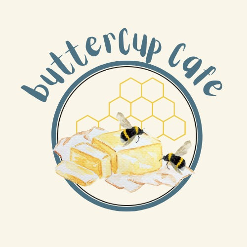

Buttercup Café.Your Daily Pitstop |
||||||||||
| Home Menu Feedbacks About Us Contact Us | ||||||||||
|
 Our Mission Our mission is to brighten your day with an early morning boost. Our Values Our Café values community engagement the most. We believe a strong connection to the local community, whether through sourcing ingredients locally, supporting local people, or hosting events that brings people together. Furthermore, we also prioritize and value the needs and satisfaction of our customers. This includes understanding their preferences, listening to feedback, and continuously improving. The Name "Buttercup" The name "Buttercup" reflects the warmth and joy we aim to bring to our guests. It embodies our philosophy of serving not just food and beverages but also happiness, one cup at a time. Just like the flower, we strive to brighten up your day and leave you with a lasting impression of cheerfulness. History of Buttercup Café Nestled in the vibrant and creative hub of Tamarind Square, Buttercup Café was founded with an objective to bring people together over a shared love for great coffee and comforting food. Established in 2020, the cafe was inspired by the simple yet profound idea that life’s best moments often happen over a cup of coffee. Buttercup Café started as a dream of a group of coffee enthusiasts who wanted to create a space where everyone feels at home. From the start, our focus has been on quality and community. We meticulously source our coffee beans from sustainable farms and partner with local artisans to craft a menu that celebrates fresh, local ingredients. The Location: Tamarind Square Choosing Tamarind Square as our home was no coincidence. Known for its unique blend of modern architecture and lush greenery, Tamarind Square provides the perfect atmosphere for Buttercup Café. Its serene yet lively environment complements our cafe’s cozy and welcoming vibe, making it an ideal spot for gatherings, work, or simply unwinding. Our Target Audience We target a diverse range of audiences, from young generations to parents with children. Nevertheless, our foremost target audience are students. University or high school students who are looking for a place to study, hang out, or take a break between classes, you are more than welcome to come as we have a special students price. Organization Chart
|
||||||||||